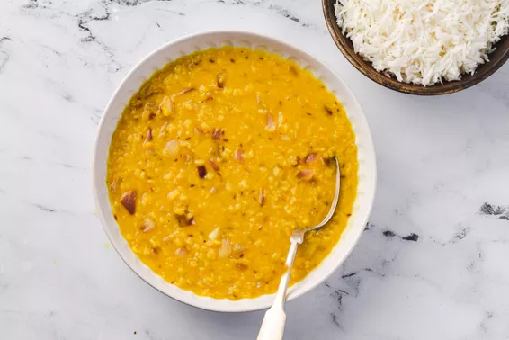

Moong-daal
Moong Daal

Enjoy this flavorful vegetarian and vegan Indian food recipe of mung dal. Mung dal, sometimes spelled "moong dal," or Indian-flavored yellow lentils, are a traditional vegetarian Indian recipe.
Ingredients
- 1 cup moong dal
- 1 cups water or vegetable broth
- 1 teaspoon turmeric
- 1 onion, diced
- 1 teaspoon cumin seeds
Steps
- In a large soup or stock pan, combine mung dal or yellow lentils, vegetable broth, turmeric, cayenne, and salt. Bring to a slow simmer.
- Cover partially with a lid and allow to cook for at least 20 minutes, and up to 30 to 40 minutes if you prefer a smoother dal. You can add a bit more liquid if needed.
- In a separate skillet, saute onion, cumin seeds, and clove in olive oil for just a few minutes over medium heat, until onions are soft.
- Add onions and spices to mung dal or lentils and allow to simmer for a few more minutes, stirring well to combine. Sprinkle with a dash of black pepper and add extra salt to taste, if needed. Serve plain, as soup, or over rice.
Home